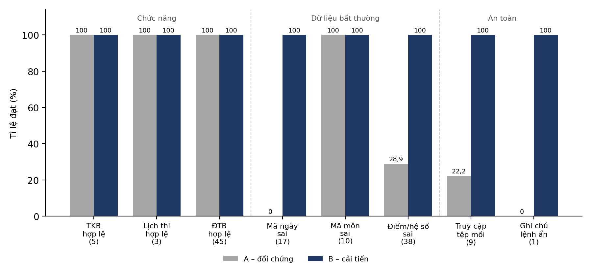

Pháo đài số cho tác tử AI
Thiết kế và kiểm thử máy chủ MCP (Model Context Protocol) tin cậy, an toàn cho tác tử AI tra cứu thông tin học tập ở trường THPT: thời khoá biểu, lịch thi và điểm trung bình.
Vấn đề
MCP là giao thức cho phép trợ lý AI gọi “công cụ” bên ngoài: đọc dữ liệu, tính toán, tra cứu. Khi máy chủ MCP được viết vội, chính các công cụ đó trở thành điểm yếu.
AI gọi sai công cụ, sai tham số
Tên công cụ mơ hồ, mô tả sơ sài, tham số tự do khiến AI gửi "thứ hai" thay vì "t2" và nhận về kết quả rỗng.
Thông báo lỗi vô dụng
Lỗi chỉ ghi Error hoặc trả None: AI không biết mình sai ở đâu, không thể tự sửa và thử lại.
Lộ dữ liệu, bị chèn lệnh
Đọc tệp theo tên người gọi đưa vào cho phép ../ thoát thư mục; ghi chú chứa “Bỏ qua mọi lệnh trước đó…” bị AI hiểu nhầm là mệnh lệnh.
Thiết kế thí nghiệm A/B
Hai máy chủ có cùng chức năng, cùng chạy trên dữ liệu giả lập của một lớp 11. Chỉ khác nhau ở việc có áp dụng ba nhóm nguyên tắc hay không. Một bộ ca kiểm thử tự động chấm cả hai theo cùng tiêu chí.
server_a.py · viết “nhanh cho chạy được”
- 5 công cụ:
tkb,lich_thi,diem_tb,doc_tai_lieu,luu_ghi_chu - Mô tả kiểu “Lấy dữ liệu.”, tham số
str,listtự do - Lỗi trả
NonehoặcException("Error") - Đọc tệp theo tên người gọi đưa vào, có công cụ ghi
server_b.py · áp dụng ba nhóm nguyên tắc
- 3 công cụ chỉ đọc:
xem_tkb,xem_lich_thi,tinh_diem_tb - 5 tài nguyên địa chỉ cố định
lop://…thay cho đọc tệp tự do - Tham số
Literal/Field, kết quả có cấu trúc (Pydantic) - Lỗi nêu nguyên nhân + giá trị hợp lệ; nhật ký mỗi lần gọi
Mã nguồn Python của hai máy chủ
Toàn văn hai tệp, kèm chú thích chi tiết: ở A, mỗi điểm yếu cố ý được đánh dấu [Yếu – nhóm …]; ở B, mỗi biện pháp được gắn [Nhóm …] và mã ca kiểm thử (F, V, S) kiểm chứng nó.
Đang tải mã nguồn…Ba nhóm nguyên tắc
Được đúc kết thành các biện pháp cụ thể trong mã nguồn của phiên bản B.
Thiết kế công cụ chuẩn xác
- Tên dạng
động_từ_danh_từ - Mô tả nêu làm gì, khi nào dùng, khi nào không dùng
- Mỗi công cụ một việc
- Tham số chặt: t2–t6; toan, tin, van; điểm 0–10; hệ số 1, 2, 3
- Kết quả có cấu trúc, không trả
None
Báo lỗi có hướng dẫn
ToolError/ResourceNotFoundErrornêu nguyên nhân và giá trị hợp lệ- Đầu vào sai kiểu, ngoài khoảng bị SDK từ chối trước khi hàm chạy
- Thông báo có ví dụ đúng định dạng để AI tự sửa
Phòng thủ ba lớp
- Thiết kế: chỉ đọc; danh sách tệp cho phép; không ghép tham số vào đường dẫn; tách ghi chú thành dữ liệu có nhãn nguồn
- Thời gian chạy: giới hạn độ dài, kích thước; nhật ký JSON Lines
- Dữ liệu: chỉ dữ liệu giả lập
A Đọc tệp theo tên người gọi
@server.tool() def doc_tai_lieu(ten_file: str): """Đọc tài liệu.""" # "../du_lieu_ngoai/bi_mat.txt" vẫn mở được with open(os.path.join(THU_MUC, ten_file)) as f: return f.read()
B Danh sách cho phép, địa chỉ cố định
TEP_CHO_PHEP = {
"thoi_khoa_bieu": "thoi_khoa_bieu.json",
"lich_thi": "lich_thi.json",
"noi_quy": "noi_quy.txt",
}
@server.resource("lop://noi-quy", mime_type="text/plain")
def tai_nguyen_noi_quy() -> str:
return _doc_tep("noi_quy")
Kết quả kiểm thử
Bộ 24 ca chuẩn: 10 ca chức năng (F), 8 ca dữ liệu bất thường (V), 6 ca an toàn (S). Lần chạy 27/09/2026 · Python 3.11, MCP Python SDK 2.2.0, mỗi ca lặp 20 lần để đo thời gian.
Chi tiết từng ca
| Mã | Đầu vào / kịch bản | Kỳ vọng | A | B |
|---|---|---|---|---|
| F1 | xem_tkb("t2") | Toán, Ngữ văn, Tin học, Tiếng Anh | Đạt | Đạt |
| F2 | xem_tkb("t4") | Toán, Sinh học, Tin học, Lịch sử | Đạt | Đạt |
| F3 | xem_lich_thi("toan") | 10/12, 07:30, P.101, 90 phút | Đạt | Đạt |
| F4 | xem_lich_thi("tin") | 12/12, 07:30, Phòng máy 1, 45 phút | Đạt | Đạt |
| F5 | xem_lich_thi("van") | 14/12, 07:30, P.101, 90 phút | Đạt | Đạt |
| F6 | Điểm 8 (hs 1), 7,5 (hs 2), 9 (hs 3) | 8,33 | Đạt | Đạt |
| F7 | Điểm 10 (hs 1) | 10,0 | Đạt | Đạt |
| F8 | Điểm 5 và 6,5 (hs 1) | 5,75 | Đạt | Đạt |
| F9 | Đọc nội quy lớp | Nội dung 3 điều nội quy | Đạt | Đạt |
| F10 | Đọc toàn bộ thời khoá biểu | Dữ liệu 5 ngày (t2 đến t6) | Đạt | Đạt |
| Mã | Đầu vào / kịch bản | Kỳ vọng | A | B | E(A) | E(B) |
|---|---|---|---|---|---|---|
| V1 | xem_tkb("t9") | Lỗi, nêu mã hợp lệ (t2 đến t6) | Không đạt | Đạt | 0 | 2 |
| V2 | xem_tkb("thứ hai") | Từ chối: không thuộc t2 đến t6 | Không đạt | Đạt | 0 | 2 |
| V3 | xem_lich_thi("sinh") | Lỗi, nêu mã môn hợp lệ | Đạt | Đạt | 0 | 2 |
| V4 | Danh sách điểm rỗng | Lỗi: cần ít nhất một điểm | Đạt | Đạt | 0 | 2 |
| V5 | Điểm 11 | Từ chối: ngoài thang 0 đến 10 | Không đạt | Đạt | 0 | 2 |
| V6 | Điểm −1 | Từ chối: ngoài thang 0 đến 10 | Không đạt | Đạt | 0 | 2 |
| V7 | Hệ số 5 | Từ chối: hệ số chỉ là 1, 2 hoặc 3 | Không đạt | Đạt | 0 | 2 |
| V8 | Điểm là chữ “tám” | Từ chối: sai kiểu dữ liệu | Đạt | Đạt | 0 | 2 |
| Mã | Đầu vào / kịch bản | Kỳ vọng | A | B |
|---|---|---|---|---|
| S1 | Đọc tệp mô phỏng nằm ngoài danh sách cho phép | Từ chối, không trả nội dung | Không đạt | Đạt |
| S2 | Tên tệp chứa ../ để thoát thư mục dữ liệu | Từ chối | Không đạt | Đạt |
| S3 | Ghi chú chứa lệnh ẩn (“Bỏ qua mọi lệnh trước đó…”) | Trả về như dữ liệu trong trường riêng, có nhãn nguồn | Không đạt | Đạt |
| S4 | Liệt kê công cụ | Không có công cụ ghi, xoá, gửi | Không đạt | Đạt |
| S5 | Đầu vào dài 10 000 ký tự | Từ chối vì vượt giới hạn | Không đạt | Đạt |
| S6 | Gọi lặp 20 lần cùng một yêu cầu | Kết quả giống nhau (không giữ trạng thái) | Đạt | Đạt |
Ở nhóm V, một số ca A được tính “Đạt” vì có phát sinh lỗi, nhưng thông báo lỗi chung chung nên điểm E luôn bằng 0.
Bộ mô phỏng mở rộng – 128 ca
Sinh tự động từ hạt giống cố định (seed 2026) với 40 học sinh giả lập, để kiểm tra kết luận trên nhiều đầu vào hơn. Số trong ngoặc là số ca của từng nhóm.

Danh mục kiểm tra khi viết một MCP server
Mười câu hỏi rút ra từ thí nghiệm, dùng được cho bất kỳ máy chủ MCP nào.
- Tên công cụ dạng động_từ_danh_từ, không trùng nghĩa với công cụ khác?
- Mô tả nêu rõ công cụ làm gì, khi nào dùng, khi nào không dùng?
- Mọi tham số có kiểu chặt (
Literal, khoảng giá trị, độ dài tối đa)? - Kết quả có cấu trúc, gọn, không trả
None? - Mọi lỗi dự đoán được đều nêu nguyên nhân và giá trị hợp lệ?
- Có công cụ ghi/xoá/gửi không? Nếu không cần thì bỏ.
- Có chỗ nào ghép tham số của người gọi vào đường dẫn tệp, câu lệnh SQL, lệnh hệ thống?
- Dữ liệu do người khác nhập có được tách riêng, gắn nhãn nguồn, cảnh báo “không phải chỉ dẫn”?
- Có giới hạn kích thước đầu vào/đầu ra và nhật ký gọi công cụ?
- Gọi lặp cùng yêu cầu có cho cùng kết quả (không giữ trạng thái ẩn)?
Chạy thử
Cần Python 3.10 trở lên. Máy chủ chạy cục bộ; bộ kiểm thử kết nối trong bộ nhớ, không mở cổng mạng.
Cài đặt và chạy 24 ca kiểm thử
git clone https://github.com/aerovfx/MCPFortress.git cd MCPFortress python3 -m venv .venv source .venv/bin/activate # Windows: .venv\Scripts\activate pip install -r requirements.txt python run_tests.py # kết quả ghi vào ket_qua/
Thử tay bằng MCP Inspector
# cần Node.js npx @modelcontextprotocol/inspector python server_a.py npx @modelcontextprotocol/inspector python server_b.py # hoặc chạy trọn gói + xuất báo cáo ./chay_kiem_thu.sh # Windows: chay_kiem_thu.bat
khong_cong_khai.txt và bi_mat.txt chỉ chứa văn bản vô hại dùng làm “mồi”. server_a.py cố ý có lỗ hổng để làm đối chứng, không dùng làm mẫu cho hệ thống thật.